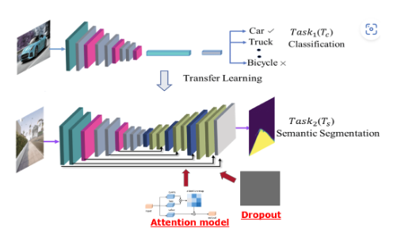
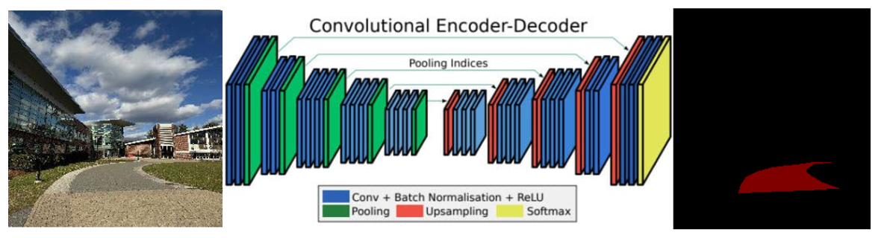
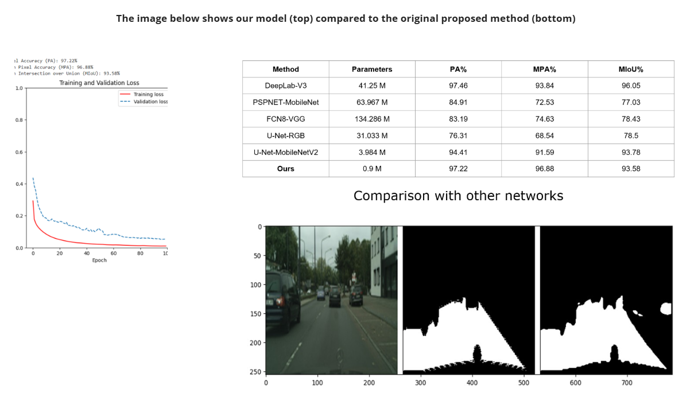

Project · Deep Learning · Computer Vision
MobileNetV2 Backbone · CityScapes Dataset · Autonomous Driving

This network is built on a U-Net architecture with MobileNetV2 as its encoder backbone. Feature maps generated by the downsampling layers are routed via skip-connections into a self-attention module within the decoder. After attention processing, the decoder applies upsampling steps, followed by max-pooling and convolutional layers. Training is conducted on the CityScapes dataset.

An experiment using a simple U-Net model: the input image depicts the campus, and the output highlights the segmented drivable area, which can then serve as input to an autonomous vehicle's motion planning module, following the methodology outlined in the referenced paper.
The image below shows our model (top) compared to the original proposed method (bottom):
